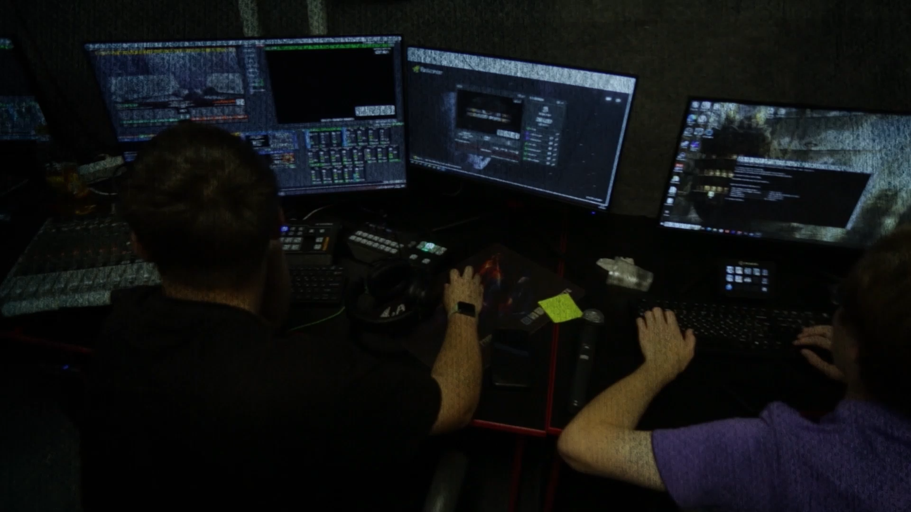

Два направления — одна студия
VSCL — это выездные трансляции и запись подкастов. Выберите, что вам нужно, — покажем релевантные пакеты, кейсы и цены.

Подкаст-студия
Аудио- и видеоподкасты
Подготовленная акустика, студийные микрофоны, монтаж, мастеринг и публикация на всех площадках.
Подробнее
Выездные трансляции
Спорт, конференции, концерты
Мультикамерная съёмка, режиссура живого эфира и стриминг на все платформы в качестве до 4K 60fps.
Подробнее